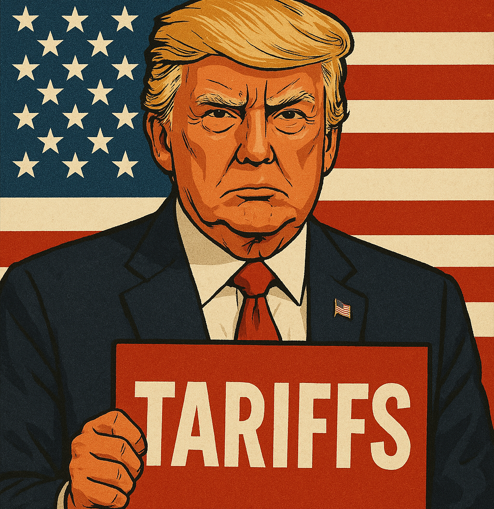

ARANCELES Y GUERRAS COMERCIALES: MÁS ALLÁ DE LOS TITULARES, CONSECUENCIAS REALES
Quizá muchos de vosotros no sabéis lo que es un arancel, o peor aún, un impuesto. Sinceramente, no os culpo; entre tanto tecnicismo económico y titulares sensacionalistas, muchas veces se nos olvida que estas palabras tan frías tienen consecuencias muy reales.
Cuando Trump decidió imponer aranceles a productos chinos, lo que parecía un simple movimiento estratégico se convirtió en una guerra comercial con múltiples efectos globales.
¿Qué son aranceles? Un arancel es básicamente un impuesto que se aplica a los productos importados, o sea, a los productos que se compran a otros países.
El objetivo suele ser proteger la industria nacional, encareciendo los productos extranjeros para que los locales parezcan más atractivos y accesibles. Esto funciona muy bien en la teoría, pero en la práctica, el tiro puede salir por la culata.
Trump y sus aranceles: una jugada arriesgada
Durante el primer mandato del presidente Trump en 2018, se anunciaron aranceles del 25% a productos chinos con el objetivo de reducir el déficit comercial, o sea, Estados Unidos compraba más de lo que vendía.
Ahora, en la actualidad, la historia entre estos grandes vuelve a repetirse, aunque esta vez con mayor agresividad. La administración de Donald Trump ha impuesto aranceles de hasta el 145% a ciertas importaciones procedentes del gigante asiático. La excusa es la misma: proteger la industria nacional del régimen chino. Sin embargo, estas medidas han tenido una respuesta inmediata y brutal.
Una guerra comercial
Los importadores estadounidenses están en pie de guerra. Rick Woldenberg, CEO de Learning Resources – importadora de productos educativos desde China –, calificó la medida como “el fin de los días” para su negocio. Woldenberg explicó que sus costos anuales en aranceles pasarán de 2,3 millones de dólares a más de 100 millones.
“Esto no es protección de trabajo, es destrucción a las empresas que dependen de cadenas globales”.
Las represalias chinas
Pekín no se quedó de brazos cruzados. Como respuesta directa e inmediata, impuso aranceles del 125% a los bienes estadounidenses, muchos de ellos agrícolas y tecnológicos. El conflicto escaló hasta el punto en que varios analistas empezaron a advertir que este conflicto podría convertirse en un catalizador que llevará a un conflicto aún mayor.
Incertidumbre económica: ¿Quién paga la factura?
La bolsa ha reaccionado con una caída inmediata. El S&P 500 perdió el 3% en una semana (El S&P 500 es un índice bursátil que representa el rendimiento de las 500 empresas más grandes que cotizan en la Bolsa de Estados Unidos), y los analistas hablan de un repunte inflacionario. La mayoría coincide en que será el consumidor quien pague la factura.
¿Enemigos o socios? La paradoja sinoestadounidense
Lo irónico de esta guerra comercial es que Estados Unidos y China siguen siendo los mayores socios comerciales del planeta. Las economías de ambas potencias están entrelazadas de forma profunda, desde tecnología hasta inversiones chinas en los bonos estadounidenses. Como dijo el economista Paul Krugman: “Puedes pelearte con tu socio comercial, pero no puedes divorciarte de él sin destruir tu propia casa”. Esta escala arancelaria nos deja una contradicción estructural: dos países enfrentados políticamente, pero condenados a colaborar económicamente. La pregunta ni siquiera es si se puede evitar el conflicto, sino cuánto daño están dispuestos a hacerse antes de darse cuenta de que se necesitan más de lo que se odian.